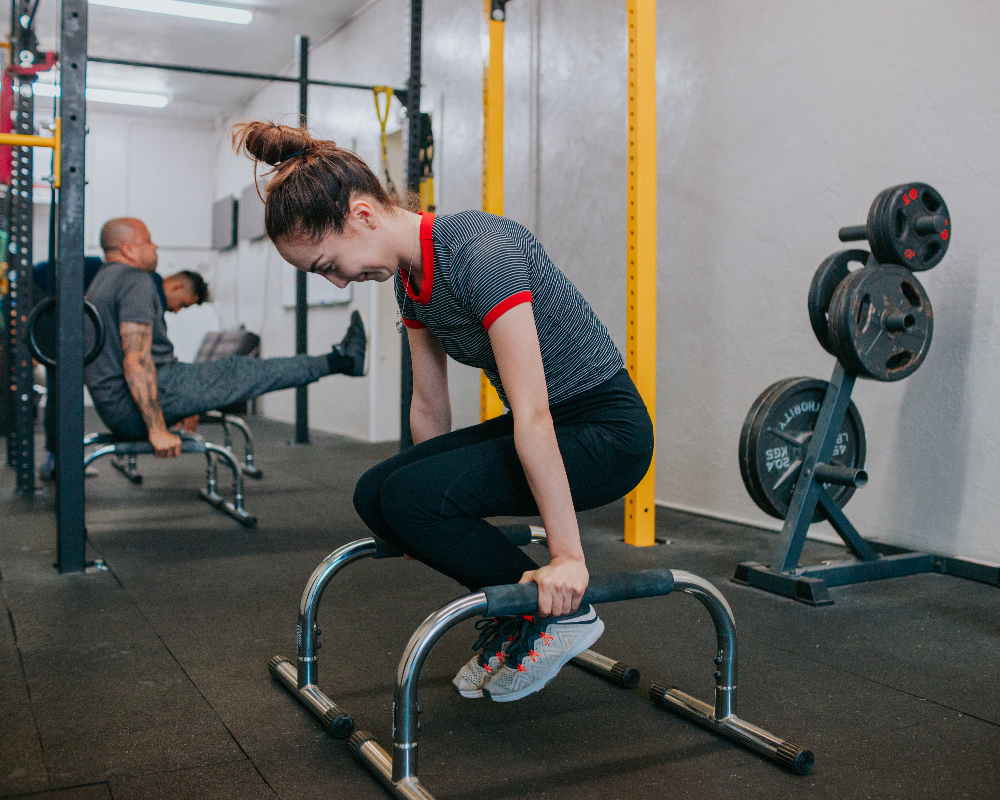
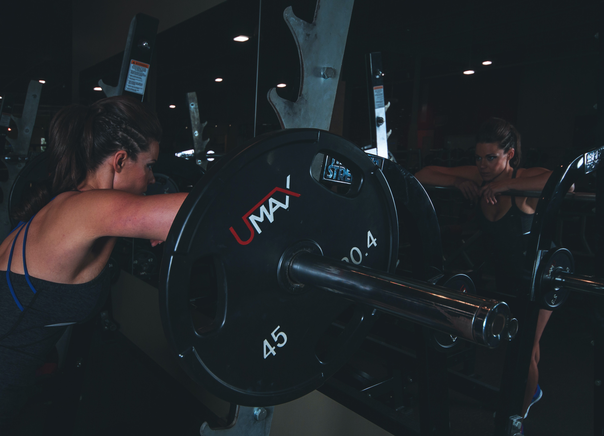

Blog
A gymnasium, also known as a gym, is a covered location for athletics. The word is derived from the
ancient
Greek gymnasium.[1] They are commonly found in athletic and fitness centres, and as activity and
learning
spaces in educational institutions. "Gym" is also slang for "fitness centre", which is often an area for
indoor recreation. A "gym" may include or describe adjacent open air areas as well. In Western
countries,
"gyms" (or pl: gymnasia") often describe places with indoor or outdoor courts for basketball, hockey,
tennis, boxing or wrestling, and with equipment and machines used for physical development training, or
to
do exercises. In many European countries, Gymnasium (and variations of the word) also can describe a
secondary school that prepares students for higher education at a university, with or without the
presence
of athletic courts, fields, or equipment.A gymnasium, also known as a gym, is a covered location for
athletics. The word is derived from the ancient Greek gymnasium.[1] They are commonly found in athletic
and
fitness centres, and as activity and learning spaces in educational institutions. "Gym" is also slang
for
"fitness centre", which is often an area for indoor recreation. A "gym" may include or describe adjacent
open air areas as well. In Western countries, "gyms" (or pl: gymnasia") often describe places with
indoor or
outdoor courts for basketball, hockey, tennis, boxing or wrestling, and with equipment and machines used
for
physical development training, or to do exercises. In many European countries, Gymnasium (and variations
of
the word) also can describe a secondary school that prepares students for higher education at a
university,
with or without the presence of athletic courts, fields, or equipment.

Ram
The first recorded gymnasiums date back to over 3000 years ago in ancient Persia, where they were
known as zurkhaneh, areas that encouraged physical fitness. The larger Roman Baths often had
attached fitness facilities, the baths themselves sometimes being decorated with mosaics of local
champions of sport. Gyms in Germany were an outgrowth of the Turnplatz,[8] an outdoor space for
gymnastics founded by German educator Friedrich Jahn in 1811[9] and later promoted by the Turners, a
nineteenth-century political and gymnastic movement. The first American to open a public gym in the
United States using Jahn's model was John Neal of Portland, Maine in 1827.[10] The first indoor
gymnasium in Germany was probably the one built in Hesse in 1852 by Adolph Spiess.[11]

Shyam
Through worldwide colonization, Great Britain expanded its national interest in sports and games to
many countries. In the 1800s, programs were added to schools and college curricula that emphasized
health, strength, and bodily measure. Sports drawn from European and British cultures thrived as
college students and upper-class clubs financed competition. As a result, towns began building
playgrounds that furthered interest in sports and physical activity.[12] Early efforts to establish
gyms in the United States in the 1820s were documented and promoted by John Neal in the American
Journal of Education[13] and The Yankee, helping to establish the American branch of the
movement.[14] Later in the century, the Turner movement was founded and continued to thrive into the
early twentieth century. The first Turners group was formed in London in 1848. The Turne eius velit
dolores ex vel!sumenda asperiores! Suscipit, ratione cum distinctio sit eius velit dolores ex vel!

Sita
In Ancient Greece, the gymnasion was a locality for both physical and intellectual
education of young men. The latter meaning of intellectual education persisted in Greek, German and
other languages to denote a certain type of school providing secondary education, the gymnasium,
whereas in English the meaning of physical education pertained in the word 'gym'.[7] The Greek word
gymnasium, which means "school for naked exercise," was used to designate a locality for the
education of young men, including physical education (gymnastics, for example, exercise) which was
customarily performed naked, as well as bathing, and studies. For the Greeks, physical education was
considered as important as cognitive learning. Most Greek gymnasia had libraries that for use after
relaxing in the baths.[citation needed]
Nowadays, it represents a common area where people, from all ranges of experience, exercise and work
out their muscles. You can also usually find people doing cardio exercises or pilates.

Rawan
Gymnasia apparatus like barbells, jumping board, running path, tennis-balls, cricket field, and
fencing area are used as exercises. In safe weather, outdoor locations are the most conducive to
health.[2] Gyms were popular in ancient Greece. Their curricula included self-defense, gymnastica
medica, or physical therapy to help the sick and injured, and for physical fitness and sports, from
boxing to dancing to skipping rope.[3]
Gymnasia also had teachers of wisdom and philosophy. Community gymnastic events were done as part of
the celebrations during various village festivals. In ancient Greece there was a phrase of contempt,
"He can neither swim nor write." After a while, however, Olympic athletes began training in
buildings specifically designed for them.[4] Community sports never became as popular among ancient
Romans as it had among the ancient Greeks. Gyms were used more as a preparation for military service
or spectator sports. During the Roman Empire, the gymnastic art was forgotten. In the Dark Ages
there were sword fighting tournaments and of chivalry; and after gunpowder was invented sword
fighting began to be replaced by the sport of fencing, as well as schools of dagger fighting and
wrestling and boxing.[5]
In the 18th century, Salzmann, German clergyman, opened a gym in Thuringia teaching bodily
exercises, including running and swimming. Clias and Volker established gyms in London, and in 1825,
Doctor Charles Beck, a German immigrant, established the first gymnasium in the United States. It
was found that gym pupils lose interest in doing the same exercises, partly because of age. Variety
in exercises included skating, dancing, and swimming. Some gym activities can be done by 6 to
8-year-olds while age 16 has been c